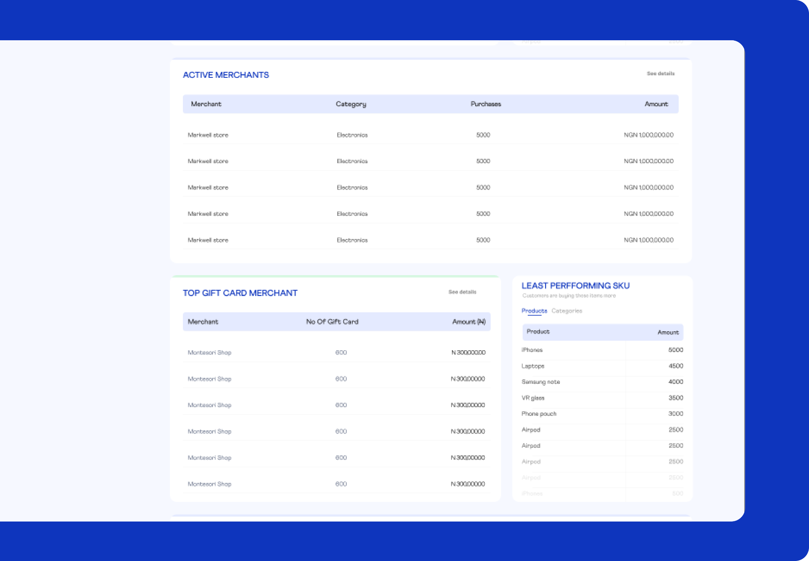
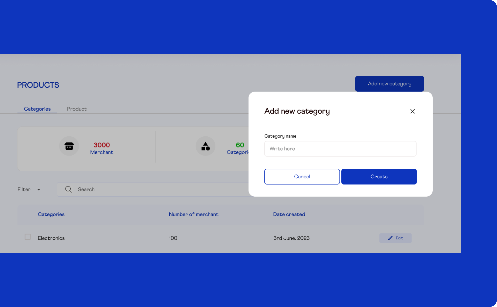
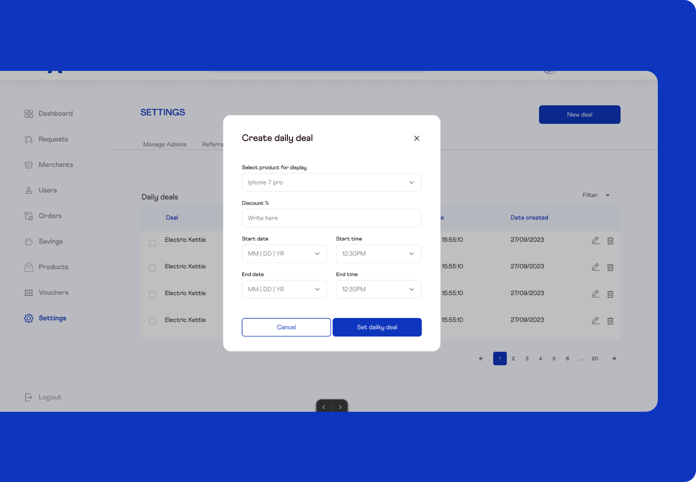
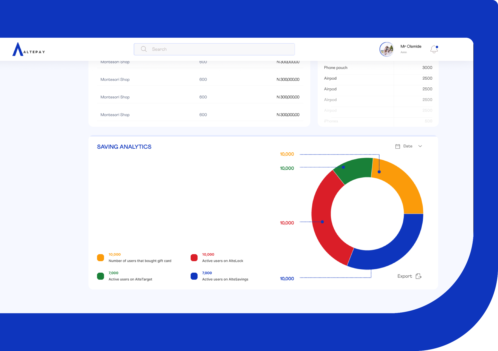
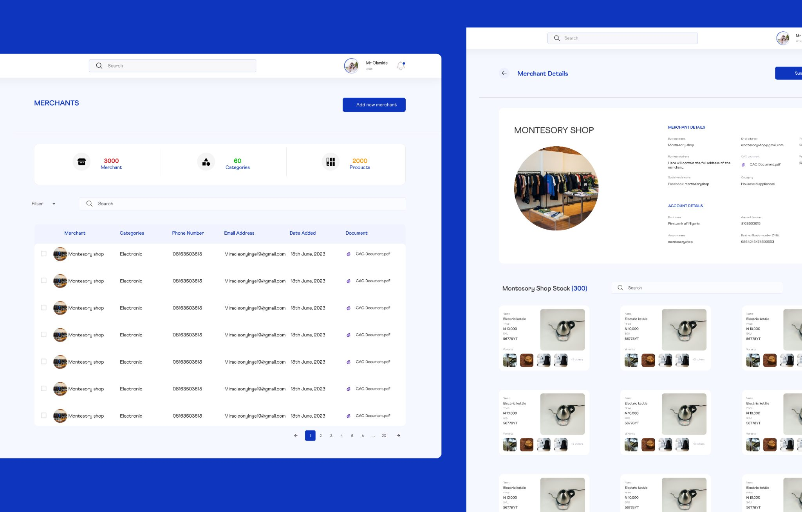
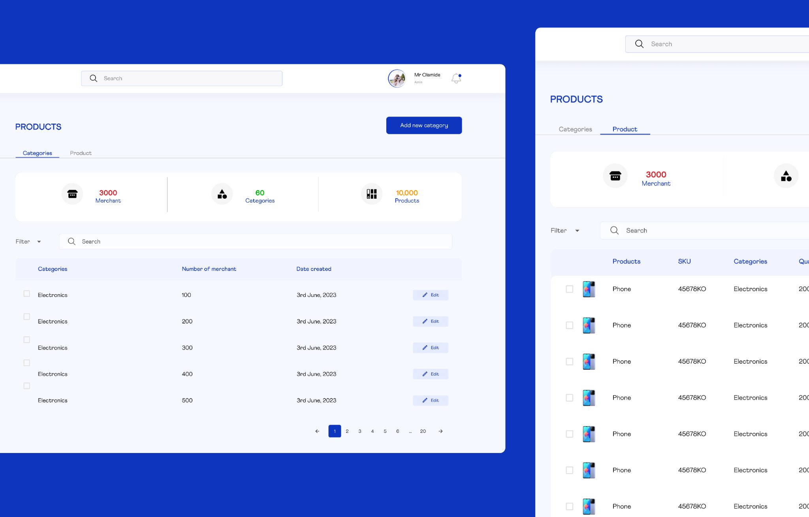
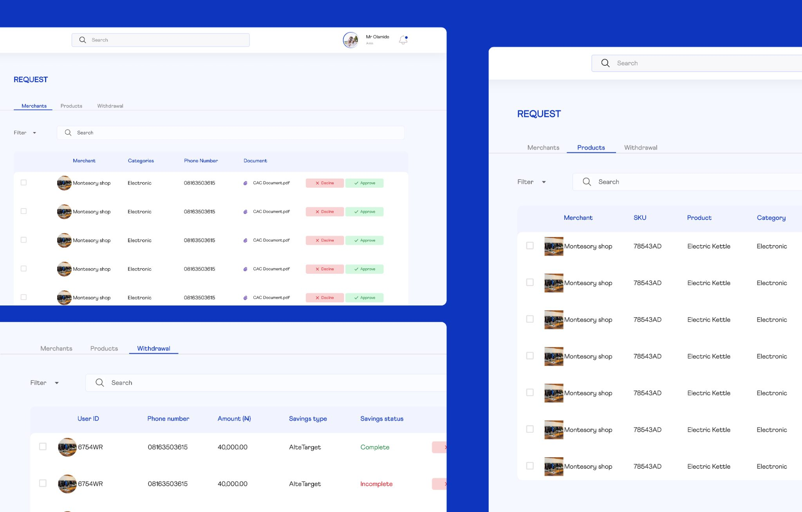
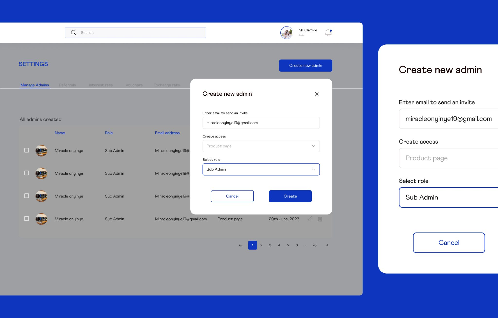
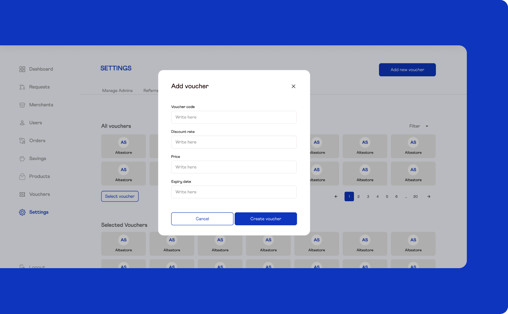

Case Study · 2024
Designing a scalable, secure, and intuitive back-office engine for a fintech platform managing thousands of merchants, real-time transactions, and compliance workflows across Africa.

Overview
When Altepay reached out in 2024, the company was at a pivotal stage. They were building a modern financial infrastructure platform designed to support merchants and digital businesses across Africa, but they needed an internal system powerful enough to manage it all.
Their goal wasn't simply to build an admin dashboard — they wanted a scalable, secure, and intuitive back-office engine capable of handling thousands of merchants, real-time transactions, product catalogues, settlements, and compliance workflows.
I was responsible for designing the complete Admin Dashboard ecosystem, including Product Management, Merchant Management, Compliance Tools, User Roles & Permissions, and the operational workflows that power Altepay's fintech infrastructure.

The Challenge
Building a fintech admin dashboard is far more than arranging tables and filters. Altepay needed a system capable of supporting complex financial interactions with absolute precision.
African merchants vary widely — from SMEs to large enterprises — each requiring different onboarding steps, compliance checks, and KYC requirements.
Customer support, compliance officers, and admins must track, filter, dispute, and audit transactions instantly without data lag.
Altepay offers multiple financial products, each with complex parameters: fees, commissions, limits, API keys, and settlement rules.
Quick detection of suspicious patterns, failed transactions, chargebacks, and abnormal merchant activity — all surfaced at a glance.
Different internal teams needed specific permissions — from support agents to senior admins — without exposing sensitive financial data.
Administrators make high-impact decisions. The interface needed to minimize errors, ambiguity, and data misinterpretation at every step.
Research & Insights
To design a robust fintech operational platform, I conducted research across several areas — studying how leading companies structure settlement tools, dispute management, product configuration, and API oversight.
I studied KYC/KYB patterns, document review systems, and audit log best practices. I investigated how African merchants interact with digital payment platforms, identifying common frustrations around onboarding, verifications, and settlement delays.
These insights shaped a dashboard that supports both speed and accuracy — balancing efficiency, clarity, and trust, essentials for a platform handling sensitive financial operations at scale.


The Solution
The Altepay Admin Dashboard was designed as a unified control center, combining merchant oversight, product configuration, compliance review, and operational monitoring into a seamless experience.

Centralized merchant profiles give admins a complete view of each merchant's business information, documents, financial activity, and risk rating.
Admins can create, edit, and manage configurable financial product catalogues including payment links, POS services, virtual accounts, wallet systems, and settlement rules.


Real-time transaction monitoring allows admins to view, filter, and inspect thousands of transactions with status tags, error codes, customer details, merchant metadata, and timeline views.
A permission hierarchy with separate access levels for support agents, risk officers, compliance teams, product managers, and super admins. Custom role creation allows Altepay to scale without system redesign.


Quick operational insights into total merchants, active merchants, approval queues, unresolved disputes, and settlement statuses — with trend lines showing spikes, drops, and risk anomalies, plus system alerts for unusual patterns like repeated failed payments or API abuse.
Learnings
Every data point must be readable at a glance, especially where financial decisions have real consequences. Ambiguity is a liability, not an aesthetic choice.
Reducing friction in onboarding, settlement approval, and dispute resolution dramatically improves merchant satisfaction and team efficiency.
From audit logs to permissions, the system is designed to protect merchants, their funds, and the company — without adding cognitive load to every interaction.
Information architecture was built with long-term growth in mind, ensuring Altepay can expand its services and merchant base without system redesign.
I'm always open to discussing new design challenges, collaborations, and ideas.
Let's Talk Back to Portfolio